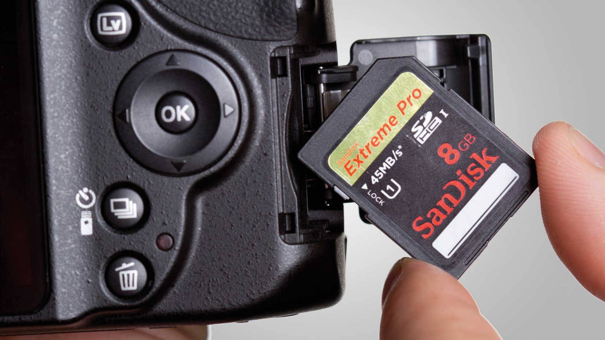

Камеры, как и любое другое устройство, могут испытывать различные проблемы и неисправности.
Вот некоторые из наиболее распространенных проблем с камерами и способы их решения:
камера не включается:
убедитесь, что камера заряжена или что в ней установлены новые батарейки;
проверьте, включен ли переключатель питания;
если ничего не помогает, возможно, проблема связана с внутренними компонентами. В этом случае рекомендуется обратиться к специалисту по ремонту камер.
камера не фокусируется:
убедитесь, что объектив камеры чист и не имеет пятен или царапин;
проверьте настройки фокусировки на камере. Возможно, они установлены неправильно;
если ничего не помогает, возможно, проблема связана с механизмом фокусировки. В этом случае рекомендуется обратиться к специалисту по ремонту камер.
камера не сохраняет фотографии:

убедитесь, что карта памяти вставлена правильно и не повреждена;
проверьте настройки сохранения на камере. Возможно, они установлены неправильно;
если ничего не помогает, возможно, проблема связана с внутренними компонентами. В этом случае рекомендуется обратиться к специалисту по ремонту камер.
камера издает странные звуки:
убедитесь, что объектив камеры чист и не имеет пятен или царапин;
проверьте, нет ли замятия или других препятствий внутри камеры;
если ничего не помогает, возможно, проблема связана с механизмом камеры. В этом случае рекомендуется обратиться к специалисту по ремонту камер.